Getting started
From the first connection to diagrams, models, AI and agents. If you have nothing to connect to yet, the demo database has everything this guide shows.
Connect, or try the demo
- New connection (bottom left) offers PostgreSQL, SQL Server, Oracle, MySQL, MariaDB, SQLite, DuckDB, ClickHouse, CockroachDB, BigQuery and Trino. Paste a whole connection string into the field at the top and the form fills itself; a hosted service such as Supabase, Neon or Amazon RDS is recognized and TLS is turned on.
- SQL Server on Windows: choose Windows authentication and leave the password empty.
- Import connections finds the tools on your computer (DBeaver, DataGrip, pgAdmin, SSMS, Azure Data Studio, MySQL Workbench, HeidiSQL and more) or reads a file from a colleague. When a password is missing, the app asks for it when you connect.
- Drop a
.env, a docker-compose file or a project folder on the window: the databases it names become connections. Nothing connects until you open one. - Nothing to connect to: click Try the demo database on the start screen, or Query a file.
- Mark a connection Read-only or as production, and the app asks before every risky operation.
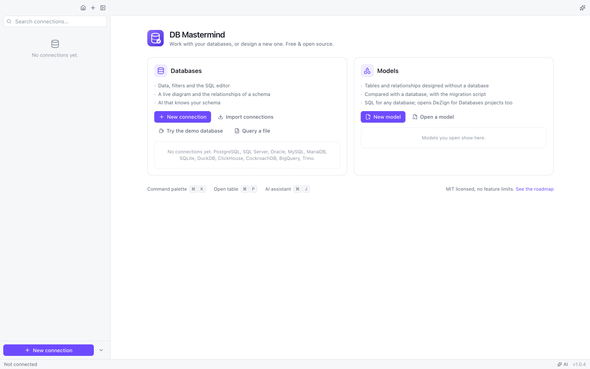
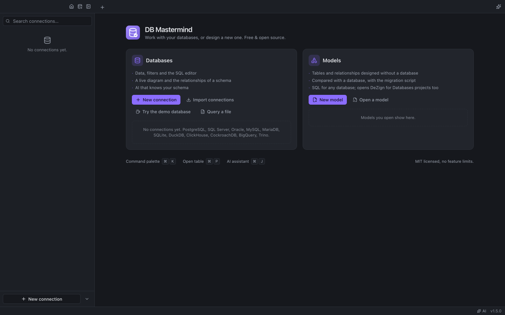
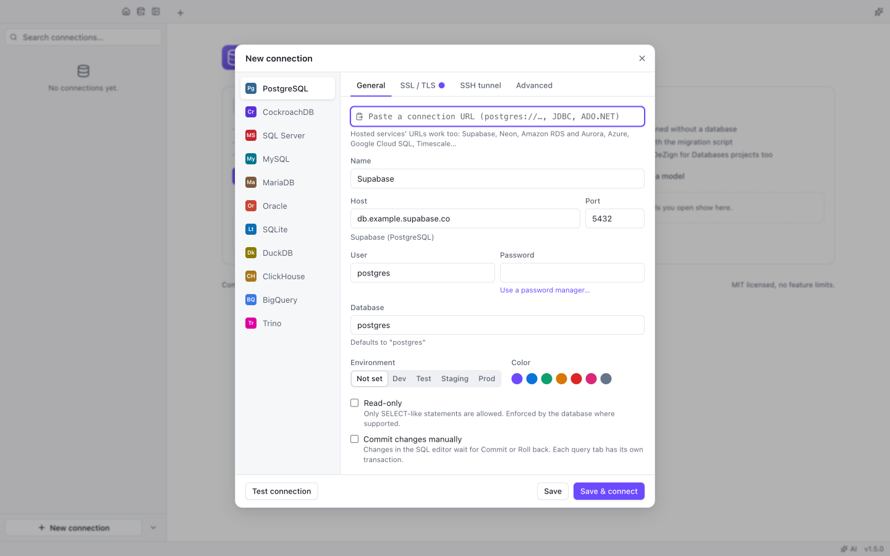
Browse and filter
- Double-click a table in the explorer to open its data.
- Filter (Ctrl/⌘ F): groups of AND/OR conditions with more than 25 operators (in list, between, regex, last N days), your own WHERE, or a filter described in words that AI turns into conditions.
- An arrow in a foreign-key cell opens the row it points to.
- Right-click a column header to hide, move or pin columns.
- Export the whole table or result to CSV, Excel, JSON, SQL or Markdown, without a row limit.
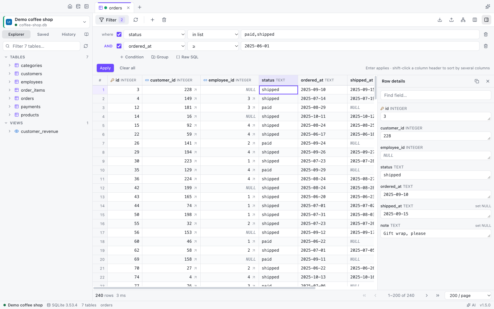
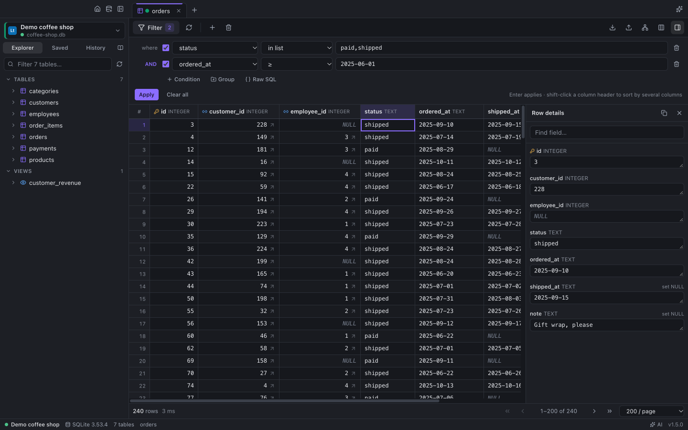
Edit safely
- Type into cells or paste rows from Excel. Nothing is saved until you apply the change set, and the SQL preview shows what runs.
- Shift+Enter on a cell opens the value editor, which formats and checks JSON.
- Turn on Commit changes manually for a connection, and every change waits for your Commit; reads don’t open a transaction.
- Each query tab has its own session. When a transaction is open, the editor’s bar shows it with its changes and offers Commit and Rollback. Closing a tab, disconnecting or quitting with an open transaction always asks first.
Write SQL
- Ctrl/⌘ Enter runs the statement under the cursor, Shift+Ctrl/⌘ Enter the whole script.
- Autocomplete knows the schema: after JOIN it suggests related tables with the whole ON clause.
- Ctrl/⌘ I: describe the query in words and AI writes it. A failed statement gets Fix with AI.
- Show a result as a chart and pin it to a dashboard. Copy a result as TSV for Excel, JSON or Markdown.
- Ctrl/⌘ \ shows two tabs side by side, for example a query and a table.
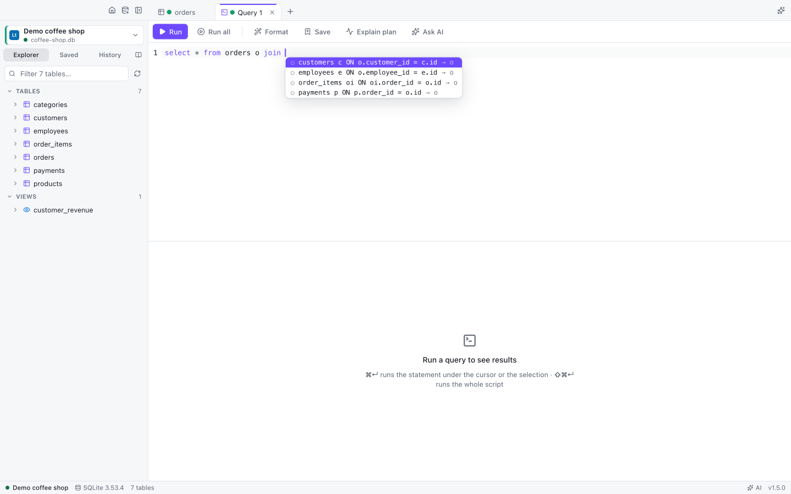
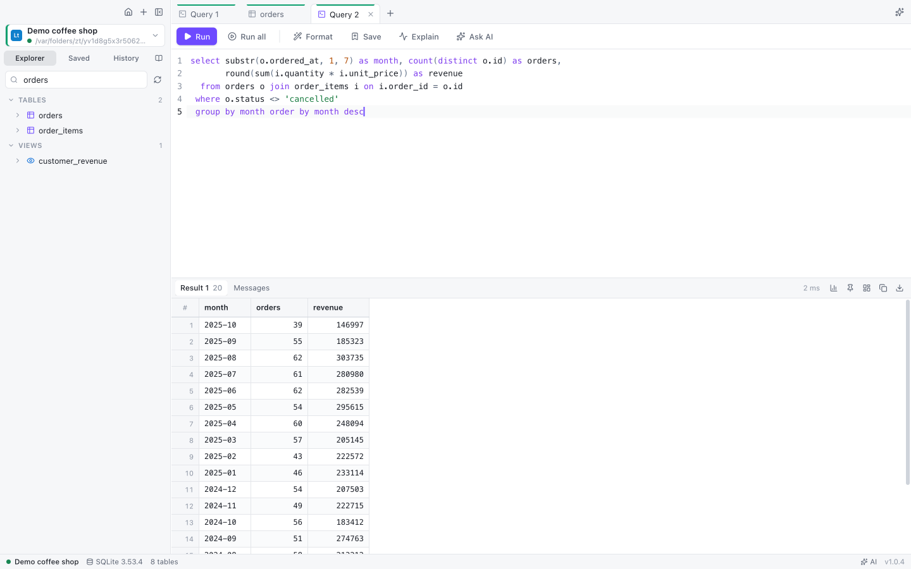
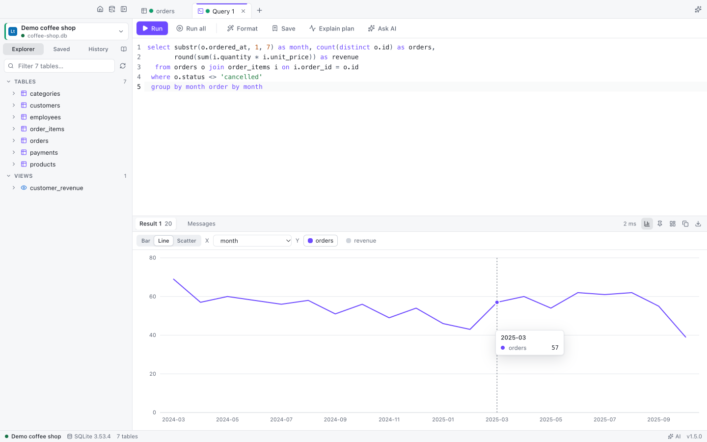
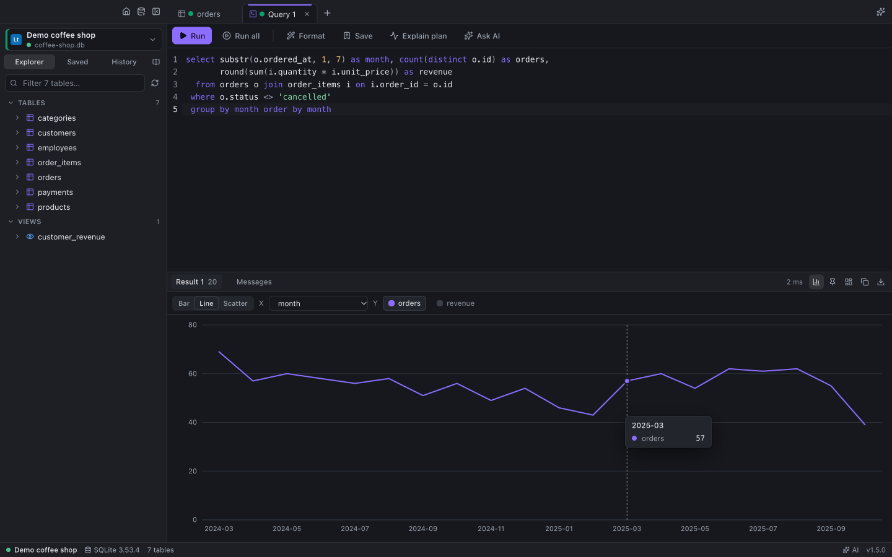
Diagrams and models
- Command palette (Ctrl/⌘ K), then Open ER diagram: focus on a table and its neighbors, find the join path between two tables as a ready JOIN, color tables, and save diagrams for subject areas.
- Design edits tables, columns, keys and indexes right on the diagram of a live database. Review migration shows the SQL script, the checks against the existing data and the rollback; you can leave out single changes.
- New model on the start screen starts a model without a database: add tables, columns and relationships on the canvas. The model is a DBML file; Compare with database gives the migration.
- Open a model also takes an SQL script, a Prisma schema, a Mermaid ER diagram, a drawDB file or a MySQL Workbench model. Export a model or a live database as a Prisma schema, Drizzle schema, SQLAlchemy models or TypeScript types from the diagram’s Export menu.
- DeZign for Databases projects open and save back in place: what is kept.
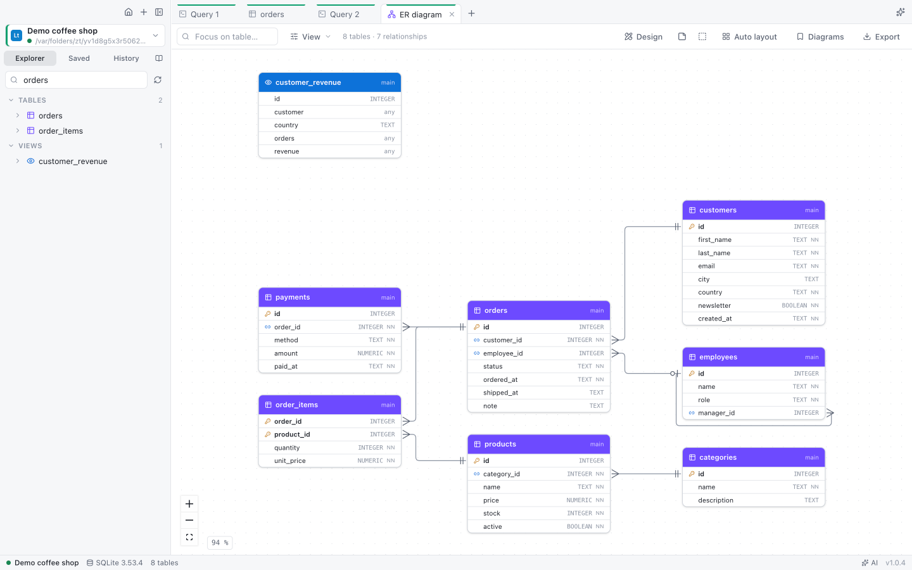
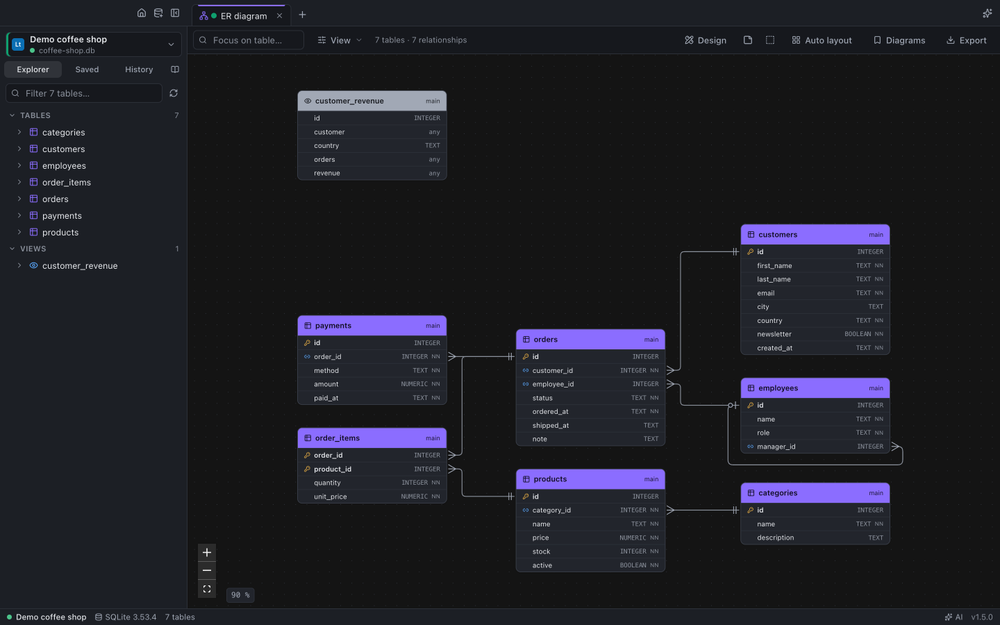

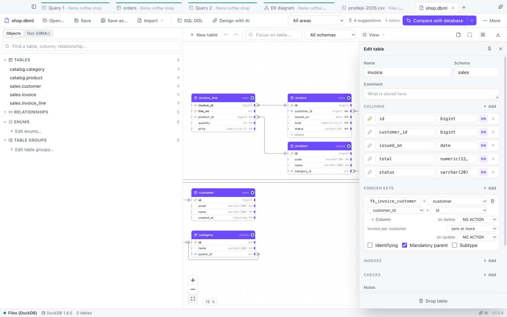
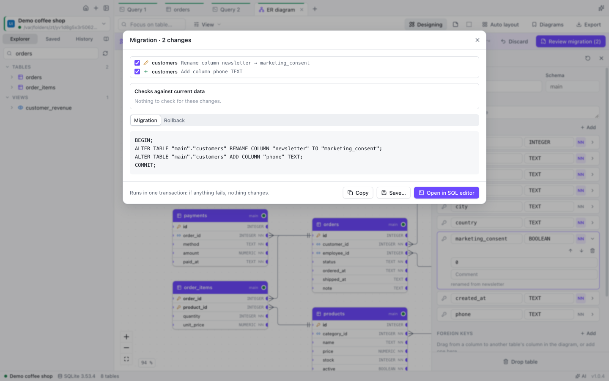
AI and agents
- Settings → AI assistant: your own key (Anthropic, OpenAI, OpenRouter, Azure, Gemini), a local Ollama, or your Claude Code or Codex sign-in.
- Ctrl/⌘ J opens the assistant. It explores the schema, runs read-only queries and asks before any change.
- A knowledge base is a folder of Markdown notes about a database: what codes and statuses mean, how tables relate. Set it on the connection; AI can write the first version.
- Settings → MCP server → Add to … puts DB Mastermind into Claude Code, Claude Desktop, Codex, Cursor or VS Code. Agents use your connections, read-only unless you say otherwise. Setup for other agents

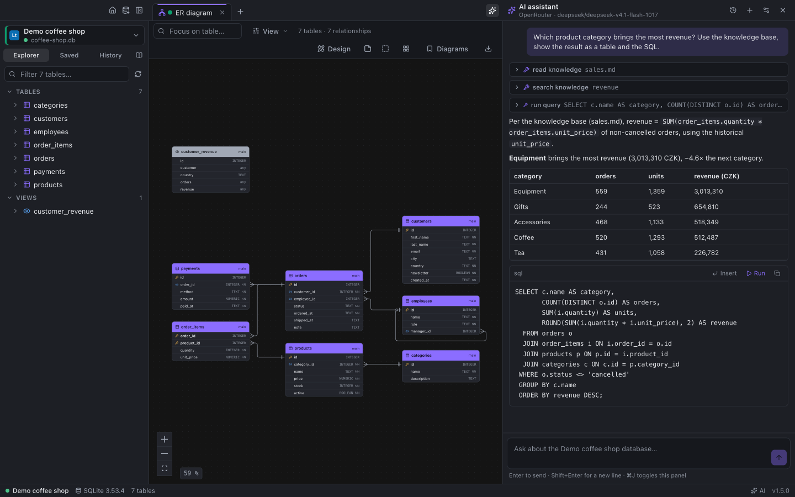
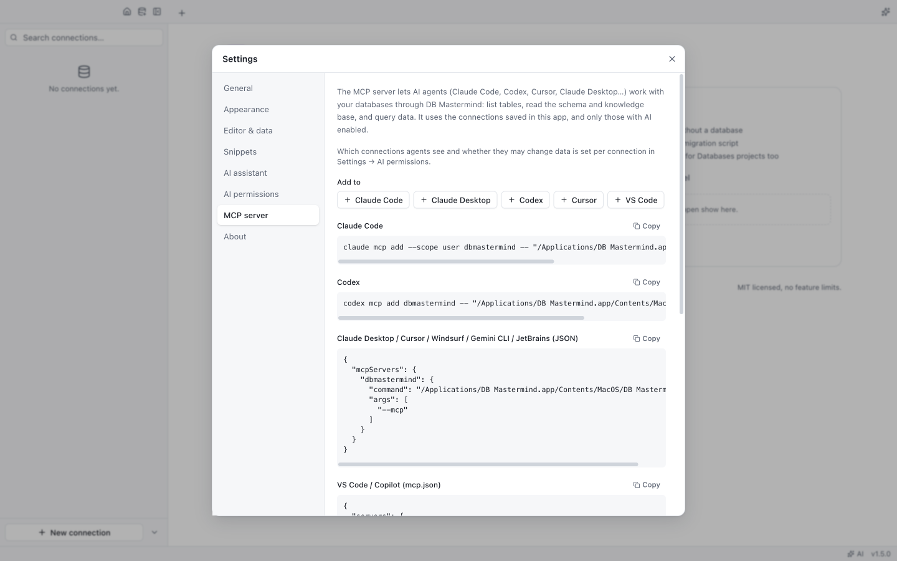

Where things are
| Shortcut | Action |
|---|---|
| Ctrl/⌘ K | Command palette |
| Ctrl/⌘ P | Open a table |
| Ctrl/⌘ T | New query |
| Ctrl/⌘ Enter | Run the statement |
| Ctrl+Alt+Shift+Enter / ⌥⇧⌘↵ | Commit the transaction |
| Ctrl+Alt+Shift+Backspace / ⌥⇧⌘⌫ | Roll back the transaction |
| Ctrl/⌘ I | Write SQL with AI |
| Ctrl/⌘ J | AI assistant |
| Ctrl/⌘ \ | Split view |
| Shift+Enter | Value editor of a cell |
| Ctrl/⌘ , | Settings |
- Every shortcut: Help → Keyboard Shortcuts.
- Theme, contrast, accent color and density: Settings → Appearance. Language: Settings → General.
- A team folder (a network drive, OneDrive or a Git repository) shares connections without passwords, saved queries and knowledge bases: Settings → General, and how it works.
- For IT: a managed configuration file adds connections and rules such as AI off: managed configuration.
- Backup and restore: right-click a connection.
Something missing or wrong? Open an issue.